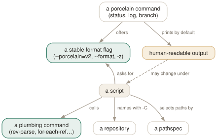

Day 19
Plumbing for scripts
The commands and formats that promise not to change — and the ones you should never parse.
By the end of today you can
- tell a command whose output is safe to script against from one whose output is for humans
- write a shell script that finds its repository, lists refs and reads status without breaking on odd file names
- select paths with pathspec magic — exclusions, globs that respect
/, case-insensitive matches
Two interfaces, two promises
git(1) splits its commands into porcelain and plumbing, and attaches a promise to each. The plumbing interface — input, output, options, semantics — is meant to be “a lot more stable”, because it exists for scripts. Porcelain is explicitly “subject to change in order to improve the end user experience”. A script that parses porcelain output is a script with an expiry date.
In practice the line runs through individual commands, not between them. Most porcelain commands have a flag that switches them to a stable format: git status --porcelain=v2, git log --format=, -z on anything that prints paths. And a handful of plumbing commands do jobs every script needs: rev-parse to find things, for-each-ref to list refs, cat-file --batch to read objects in bulk.

git status is for humans, git status --porcelain=v2 is a contract. The dashed aspect is the one the git(1) page reserves the right to change.Finding the repository
git rev-parse is the Swiss-army knife: besides turning names into hashes (Day 7) it answers every “where am I?” question a script has.
$ cd src && git rev-parse --show-toplevel
/home/ada/p19
$ git rev-parse --git-dir
/home/ada/p19/.git
$ git rev-parse --show-prefix
src/
$ cd /tmp && git rev-parse --is-inside-work-tree; echo $?
fatal: not a git repository (or any parent up to mount point /)
Stopping at filesystem boundary (GIT_DISCOVERY_ACROSS_FILESYSTEM not set).
128
The global options go before the subcommand and apply to everything: git -C <path> runs as if started there, git -c key=value overrides config for one invocation (Day 12), git -P (or --no-pager) never starts less. Scripts should use -C rather than cd, because a failed cd leaves git discovering whatever repository contains the current directory.
$ git -C ~/p19 -c core.abbrev=12 log --oneline -1
174e0280853b Awkward names
Stable formats you can parse
Refs. git for-each-ref is git branch and git tag with a template language. Each %(field) is documented in git-for-each-ref(1), and %(if)…%(then)…%(end) gives you conditionals:
$ git for-each-ref --sort=-committerdate \
--format='%(committerdate:short) %(refname:short) %(upstream:short) %(upstream:track)' refs/heads/
2026-09-25 main origin/main
2026-09-20 feature origin/main [ahead 2]
Status. --porcelain=v2 prints headers starting with #, then one line per path: 1 for an ordinary change, 2 for a rename, u for unmerged, ? for untracked. The XY field is index then worktree, with . for unchanged:
$ git status --porcelain=v2 --branch
# branch.oid 2c700360f7bd33b0317670aa25b27ea514da3218
# branch.head main
# branch.upstream origin/main
# branch.ab +0 -0
1 .M N... 100644 100644 100644 4bcfe98… 4bcfe98… docs/readme.md
1 M. N... 100644 100644 100644 7898192… b478595… src/a.c
? untracked.txt
Commits. git log --format takes placeholders: %H/%h full and short hash, %P parents, %an/%ae author name and email, %ad author date (shaped by --date=short, iso-strict or format:%Y-%m-%d), %s subject, %n newline. Objects in bulk. git cat-file --batch-check reads names on stdin and prints hash, type and size, one process for any number of objects; --batch adds the contents.
$ printf '%s\n' HEAD HEAD:src HEAD:src/a.c nosuch | git cat-file --batch-check
174e0280853b79cc646acf541286f6aad3825f2a commit 220
2e90ee9bdeebf8d96dfdb980f2c2a03f5e795ea4 tree 62
78981922613b2afb6025042ff6bd878ac1994e85 blob 2
nosuch missing
Pathspecs are a language too
Every path argument after -- is a pathspec, and a pathspec can start with :(magic) to change how it matches. These were each run against a tree containing src/a.c, src/B.C, docs/readme.md:
'*.c'- Plain:
*matches across/, so this findssrc/a.c. ':(glob)*.c'- Shell-style:
*stops at/. Finds nothing at the top level.':(glob)**/*.c'findssrc/a.c. ':(icase)src/*.c'- Case-insensitive: finds both
src/a.candsrc/B.C. ':(exclude)src'or':!src'- Everything except
src. Combine with positive pathspecs to subtract from them. --literal-pathspecs- No magic, no globbing:
'*.c'means a file literally named*.c. For paths that came from git itself.
$ git ls-files -- ':!*.md' src
src/B.C
src/a.c
A script worth keeping
After git fetch --prune removes remote branches that were merged and deleted, your local branches that tracked them are left behind, with an upstream of [gone]. This lists them, using only stable interfaces:
#!/bin/sh
# git-gone [repo]: local branches whose upstream no longer exists.
set -eu
repo=${1:-.}
if ! git -C "$repo" rev-parse --git-dir >/dev/null 2>&1; then
echo "git-gone: not a repository: $repo" >&2
exit 1
fi
git -C "$repo" for-each-ref \
--format='%(if:equals=[gone])%(upstream:track)%(then)%(refname:short)%(end)' \
refs/heads/ | grep -v '^$' || true
$ git fetch --prune && git gone
feature
fix/naïve
$ git gone /tmp; echo $?
git-gone: not a repository: /tmp
1
Save it as git-gone anywhere on your PATH and it becomes git gone: git runs any git-<name> executable as a subcommand. Day 21 shows that such an executable even wins over an alias of the same name.
One more lookup worth knowing: git var GIT_EDITOR prints the editor git would really launch after checking GIT_EDITOR, core.editor, VISUAL and EDITOR in turn — vi when all are unset. A script that opens an editor should ask git rather than guess.
Today's habit
Find one shell alias or script of yours that greps human git output and rewrite it against a format flag or plumbing command. Then add -z wherever it handles paths.
Tomorrow: the inside of .git — loose objects, packfiles, and what garbage collection actually collects.
New vocabulary
Commands
| Command | Does |
|---|---|
git rev-parse --show-toplevel | Print the root of the working tree. The first line of most scripts. |
git rev-parse --git-dir | Print where the repository is — .git, or somewhere else entirely. |
git rev-parse --is-inside-work-tree | Print true, or fail with status 128 outside a repository. |
git for-each-ref --format=… refs/heads/ | Print one formatted line per ref: the scriptable git branch. |
git status --porcelain=v2 --branch -z | Machine-readable status, NUL-terminated, with branch and ahead/behind headers. |
git log --format=… | Print commits through a template of %H, %an, %ad, %s and friends. |
git ls-files -z | List tracked paths raw, NUL-terminated, without C-quoting. |
git cat-file --batch-check | Read object names on stdin; print hash, type and size for each. One process for thousands of objects. |
git var GIT_EDITOR | Print the editor git would actually launch, after all the fallbacks. |
Options
| Option | Does |
|---|---|
-C <path> | Run as if started in <path>. Global option: goes before the subcommand. |
--no-pager / -P | Never pipe through the pager, even on a terminal. |
:(exclude)… / :!… | Pathspec magic: everything except the matching paths. |
Drillsdo these in a real terminal, today
Self-check
Answer out loud first, then unfold.
A script parses git status for the word “modified:”. It works for a year, then breaks on a colleague's machine. Name two likely causes.
Human output is translated — a German locale prints “geändert:” — and its layout is explicitly allowed to change between versions; the git(1) page says the porcelain interface is “subject to change in order to improve the end user experience”. Colleagues' config (status.short, color.status=always) changes it too.
Use git status --porcelain=v2: fixed format, untranslated, and unaffected by user config. Confusingly, porcelain in that flag means “the format porcelain scripts consume”, which is the stable one.
Your loop for f in $(git ls-files); do … fails on exactly two files: one with a space and one called naïve.txt. Why is the second one broken even though it has no space?
Because ls-files C-quotes any path with bytes outside printable ASCII, so it prints "na\303\257ve.txt" — quotes and octal escapes included — and no such file exists. (core.quotePath controls this; it is on by default.) The space breaks word splitting separately. Use git ls-files -z and read NUL-terminated records with xargs -0 or while IFS= read -r -d ''.
git ls-files '*.c' finds src/a.c, but git ls-files ':(glob)*.c' finds nothing. Which one is the odd one out?
The first. A plain pathspec is matched with fnmatch semantics where * also matches /, so *.c means “any .c file anywhere”. The glob magic switches to shell-like rules, where * stops at a slash; you need :(glob)**/*.c. Pick one style per script and say so explicitly, because --glob-pathspecs or GIT_GLOB_PATHSPECS in the caller's environment would silently change the plain one.
A cron job runs cd /srv/app && git pull. One day /srv/app is missing, and the job pulls into your home directory's dotfiles repository. How do you make that impossible?
Do not rely on cd plus repository discovery, which walks up from wherever the shell happens to be. Use git -C /srv/app pull — which fails if the directory does not exist — and check git -C /srv/app rev-parse --show-toplevel equals /srv/app before doing anything destructive. set -eu in the script catches the failed cd as well.
Cheat sheet
git rev-parse --show-toplevel | --git-dir | --show-prefix
git rev-parse --is-inside-work-tree # exit 128 outside
git -C DIR -c k=v -P <cmd> # global options go first
git for-each-ref --format='%(refname:short) %(upstream:track)' refs/heads/
git status --porcelain=v2 --branch -z # stable, NUL-separated
git log --format='%h %an %ad %s' --date=short
git ls-files -z # raw paths, never quoted
... | git cat-file --batch-check # hash type size, in bulk
':!dir' ':(glob)**/*.c' ':(icase)x' # pathspec magic
git var GIT_EDITOR # the editor git will use
Everything through Day 19
Commands
| Command | Does |
|---|---|
git init -b main | Create an empty repository whose first branch is main. |
git hash-object <file> | Print the object name the file's contents would get. Writes nothing without -w. |
git cat-file -t <object> | Print an object's type: blob, tree, commit or tag. |
git cat-file -p <object> | Pretty-print an object's contents. The one command that shows what git really stores. |
git cat-file -s <object> | Print an object's size in bytes. |
git ls-tree -r <tree-ish> | List every blob in a tree, recursively, with mode and hash. |
git rev-parse HEAD | Turn a name into the full hash it currently means. |
git count-objects -v | Count loose and packed objects and the disk they use. |
git status -s | Show each changed path with two columns: index vs HEAD, then working tree vs index. |
git add <path> | Copy the file's current contents into the index. Writes the blob immediately. |
git add -p | Walk through each hunk and choose which ones go into the index. |
git diff | Show what differs between the index and the working tree — what add would stage. |
git diff --staged | Show what differs between HEAD and the index — what commit would record. |
git restore <path> | Overwrite the working-tree file with the index version. Discards unstaged edits. |
git restore --staged <path> | Reset the index entry to HEAD's version. The working tree is untouched. |
git commit [-a] | Turn the index into a tree, wrap it in a commit, move the branch to it. -a first stages every modified tracked file (never untracked ones). |
git rm --cached <path> | Remove a path from the index only; the file stays on disk, now untracked. |
git branch | List local branches; * marks the one HEAD names. |
git branch -v | List branches with the commit each points at and its subject line. |
git branch <name> | Create a branch at HEAD without switching to it. |
git switch <branch> | Point HEAD at a branch and update the index and working tree to its commit. |
git switch -c <name> | Create a branch at HEAD and switch to it in one step. |
git switch - | Switch back to the branch you were on before. |
git switch --detach <commit> | Point HEAD directly at a commit, with no branch in between. |
git branch -d <name> | Delete a branch, refusing unless it is merged into its upstream (or into HEAD, if it has none). |
git branch -D <name> | Delete a branch unconditionally. |
git branch -m <old> <new> | Rename a branch. |
git merge <branch> | Bring the branch's history into the current one: fast-forward if possible, else a merge commit. |
git merge --ff-only <branch> | Merge only if it is a fast-forward; otherwise refuse and change nothing. |
git merge --no-ff <branch> | Always create a merge commit, even when a fast-forward was possible. |
git merge --abort | Give up a conflicted merge and restore the state before it started. |
git merge-base A B | Print the best common ancestor of two commits — the version a merge compares against. |
git ls-files -u | List the unmerged index entries: one line per stage per conflicted path. |
git show :1:<path> | Show the base version of a conflicted file. :2: is yours, :3: theirs. |
git checkout --conflict=merge <path> | Recreate the conflict markers in a file you mangled; =zdiff3 works too. |
git clone <url> | Copy a repository: all objects, its branches as origin/*, and one local branch checked out. |
git remote -v | List remotes with their fetch and push URLs. |
git remote add <name> <url> | Register another repository under a short name. |
git fetch | Download new objects and move the remote-tracking refs. Never touches your branches or files. |
git pull | Fetch, then integrate the upstream into the current branch. |
git push | Send the current branch's commits and move the branch of the same name on the remote. |
git push -u origin <branch> | Push and record origin/<branch> as this branch's upstream. |
git push origin --delete <branch> | Delete a branch on the remote. |
git branch -vv | List branches with their upstream and ahead/behind counts. |
git log --oneline --graph --all | Draw every branch's history, one line per commit. |
git log -p | Show each commit's diff against its parent. |
git log --stat | Show which files each commit touched, and how much. |
git log --author=<re> --since=<date> | Keep only commits whose author matches, from a date onwards. |
git log -- <path> | Keep only commits that changed the path. The -- separates paths from revisions. |
git log --follow -- <file> | Follow one file's history back through renames. |
git log -S<string> | Pickaxe: keep commits that change how many times the string occurs. |
git log -G<regex> | Keep commits whose diff adds or removes a line matching the regex. |
git log -L :<func>:<file> | Show the history of one function (or -L 10,20:file for a line range). |
git show <commit> | Show one commit: message and diff. |
git blame -w -C <file> | Annotate each line with its last commit, ignoring whitespace and seeing moves between files. |
git rev-parse --verify <rev> | Resolve an expression to one object name, or fail. The checker for everything today. |
git rev-parse --abbrev-ref <rev> | Print the short ref name an expression means: @{u} becomes origin/main. |
git rev-parse --symbolic-full-name <rev> | Print the full ref name, e.g. refs/remotes/origin/main. |
git log A..B | List commits reachable from B but not from A: what B has that A lacks. |
git log --left-right A...B | List commits on either side but not both, marked < or >. |
git diff A...B | Diff from the merge base of A and B to B: what B changed since they split. |
git show <rev>:<path> | Print a file as it was in any commit, without checking anything out. |
git show :<path> | Print the version of a file currently staged in the index. |
git commit --amend | Replace the last commit with a new one built from the current index. Opens the editor. |
git commit --amend --no-edit | Amend, keeping the message: for the file you forgot to add. |
git reset --soft <rev> | Move the branch to rev. Index and working tree untouched. |
git reset <rev> | Move the branch and reset the index to it (--mixed, the default). Working tree untouched. |
git reset --hard <rev> | Move the branch, and overwrite index and working tree to match. Destroys uncommitted work. |
git reset -- <path> | Copy path from HEAD into the index: unstage. The branch does not move. |
git restore --source=<rev> <path> | Overwrite a working-tree file with its version from any commit. |
git revert <commit> | Make a new commit that undoes commit. The safe undo for published history. |
git clean -n | List the untracked files -f would delete. Add -d for directories, -x for ignored files. |
git clean -fd | Delete untracked files and directories. Ignored files survive unless -x. |
git rebase <upstream> | Replay the commits in <upstream>..HEAD on top of upstream. With no argument, uses @{u}. |
git rebase --onto <new> <old> [<branch>] | Replay <old>..<branch> on top of new: transplant part of a branch. |
git rebase --continue | After resolving and git adding a conflict, commit it and go on. |
git rebase --skip | Drop the commit that stopped, and go on. |
git rebase --abort | Put the branch back exactly where it was before the rebase started. |
git push --force-with-lease | Overwrite the remote branch only if it is still where your remote-tracking branch says. |
git push --force-if-includes | With the lease: also refuse if the remote tip was fetched but never integrated locally. |
git rebase -i <base> | Open the todo list for <base>..HEAD in your editor, then run it. |
git rebase --edit-todo | Re-open the remaining todo list while a rebase is stopped. |
git commit --fixup=<commit> | Commit the staged change as fixup! <subject>, to be melted into commit later. |
git commit --fixup=amend:<commit> | Like --fixup, but the squash also replaces the target's message. |
git rebase -i --autosquash <base> | Move every fixup!/squash!/amend! commit under its target and mark it. |
git rebase -x '<cmd>' <base> | Run cmd after every replayed commit; stop at the first failure. |
git range-diff <base> <old> <new> | Pair up the commits of two versions of a branch and show how each changed. |
git reflog | List where HEAD has pointed, newest first, as HEAD@{n} entries. Short for git reflog show HEAD. |
git reflog show <branch> | List where one branch has pointed. Its entries are <branch>@{n}. |
git reflog --date=iso | Show each entry's time instead of its index: main@{2026-09-25 09:00:00 +0200}. |
git log -g | Walk a reflog with the full git log formatting options. |
git reset --hard ORIG_HEAD | Undo the last reset, merge or rebase: go back to where it started. |
git branch <name> <commit> | Give a recovered commit a name again, so it is safe for good. |
git fsck --unreachable | List objects nothing refers to — not even a reflog. Where dropped stashes are found. |
git config list --show-origin --show-scope | List every setting in effect, with the file and scope it came from. |
git config get <name> | Print the value git will use. Exit status 1 if unset. |
git config set [--global] <name> <value> | Write a setting, to the repository's .git/config unless told otherwise. |
git config unset [--global] <name> | Remove a setting from one file. Exit status 5 if it was not there. |
git config edit --global | Open ~/.gitconfig in your editor. |
git -c <name>=<value> <cmd> | Override one setting for one command, above every file. |
git help <alias> | Print what an alias expands to. |
git stash push -m <msg> | Save staged and unstaged changes to tracked files as a stash entry, and clean the tree. |
git stash push -u | Include untracked files. -a also takes ignored ones. |
git stash push --staged | Stash only what is in the index. |
git stash list | List entries; stash@{0} is the newest. |
git stash show -p [stash@{n}] | Show an entry as a patch. Add --include-untracked to see its untracked files. |
git stash apply [--index] | Reapply an entry and keep it. --index restores what was staged as staged. |
git stash pop [--index] | Apply, and drop the entry only if it applied cleanly. |
git stash drop [stash@{n}] | Delete one entry. |
git stash branch <name> | Create a branch at the commit the stash was made on, apply it there, drop it. |
git worktree add <path> [-b <new>] [<branch>] | Check out a branch in a new directory that shares this repository. |
git worktree list | List every working tree with its HEAD and branch. |
git worktree remove <path> | Delete a clean worktree. git worktree prune forgets ones you deleted by hand. |
git check-ignore -v <path> | Print the file, line and pattern that decides whether path is ignored. |
git check-ignore -v --no-index <path> | The same for a path that is already tracked. |
git status --ignored | Also list ignored files, marked !!. |
git ls-files -o -i --exclude-standard | List every untracked file the ignore rules are hiding. |
git add -f <path> | Add a file despite an ignore rule. |
git check-attr -a -- <path> | Print every attribute set on a path. |
git ls-files --eol | Show line endings in the index and working tree, and the attribute in force. |
git add --renormalize . | Re-apply the current text/eol attributes to every tracked file in the index. |
git archive HEAD | Write a tarball of a commit, leaving out export-ignore paths. |
git cherry-pick -x <commit> | Apply one commit's change on top of HEAD as a new commit, noting the original in the message. |
git cherry-pick A..B | Pick every commit in the range, oldest first. A itself is excluded. |
git cherry-pick --continue | --skip | --abort | Resume after resolving, drop the current commit, or return to where you started. |
git log --cherry-mark --left-right A...B | Mark commits on each side with = when the other side has an equivalent patch. |
git tag -a v1.2 -m <msg> [<commit>] | Create an annotated tag: a tag object with tagger, date and message. |
git tag v1.2 [<commit>] | Create a lightweight tag: just a ref. |
git tag -l 'v1.*' | List tags matching a glob. |
git push origin <tag> | Publish one tag. Tags are not pushed with branches by default. |
git push origin --delete <tag> | Delete a tag on the remote. |
git describe [--tags] [--dirty] [--always] | Name HEAD relative to the nearest annotated tag, e.g. v1.1-1-gc6dcec7. |
git bisect start <bad> <good>... | Begin a search between a known-bad and one or more known-good commits. |
git bisect good | bad | Mark the checked-out commit, and move to the next midpoint. |
git bisect skip | This commit cannot be tested; pick a nearby one instead. |
git bisect run <cmd> [args] | Test every step automatically: exit 0 good, 1–127 bad, 125 skip, anything else abort. |
git bisect reset | End the session and return to the branch you started on. |
git bisect log | Print the session so far as a replayable script. |
git bisect replay <file> | Re-run a saved log, e.g. after correcting one wrong answer. |
git bisect view --oneline | List the commits still in the running. |
git bisect terms | Show the words in use for the two states. |
git merge -X ours <branch> | Merge normally, but settle each conflicting hunk in favour of this side. Clean hunks from the other side still land. |
git merge -s ours <branch> | Record a merge that keeps this tree exactly. The other branch's changes are discarded. |
git checkout --ours <path> | During a conflict, take stage 2 for that path. In a rebase, stage 2 is the upstream. |
git checkout --theirs <path> | Take stage 3 for that path. In a rebase, stage 3 is your own commit being replayed. |
git checkout -m <path> | Re-create the conflict markers in a file you have mangled or resolved wrongly. |
git log --merge | During a conflict, list only the commits on either side that touch the conflicted paths. |
git diff AUTO_MERGE | Show only what you have edited since git wrote the conflicted files. |
git rerere status | List paths whose conflict rerere has recorded a preimage for. |
git rerere diff | Show the resolution you are about to teach rerere. |
git rerere forget <path> | Drop a recorded resolution that turned out to be wrong. |
ls .git/hooks | See the sample hooks git init installed. None of them runs: they end in .sample. |
chmod +x .git/hooks/pre-commit | Enable a hook. A hook without the executable bit is ignored, with a hint. |
git commit --no-verify | Skip the pre-commit and commit-msg hooks for this commit. prepare-commit-msg still runs. |
git push --no-verify | Skip the pre-push hook for this push. |
git hook run <name> | Run a hook by hand, exactly as git would find it. Fails if it does not exist. |
git hook run --ignore-missing <name> | Run it if it exists; succeed quietly if not. For scripts. |
git rev-parse --show-toplevel | Print the root of the working tree. The first line of most scripts. |
git rev-parse --git-dir | Print where the repository is — .git, or somewhere else entirely. |
git rev-parse --is-inside-work-tree | Print true, or fail with status 128 outside a repository. |
git for-each-ref --format=… refs/heads/ | Print one formatted line per ref: the scriptable git branch. |
git status --porcelain=v2 --branch -z | Machine-readable status, NUL-terminated, with branch and ahead/behind headers. |
git log --format=… | Print commits through a template of %H, %an, %ad, %s and friends. |
git ls-files -z | List tracked paths raw, NUL-terminated, without C-quoting. |
git cat-file --batch-check | Read object names on stdin; print hash, type and size for each. One process for thousands of objects. |
git var GIT_EDITOR | Print the editor git would actually launch, after all the fallbacks. |
Options
| Option | Does |
|---|---|
user.name / user.email | Set the identity written into every commit's author and committer lines. |
init.defaultBranch | Name the first branch of every new repository. |
commit.verbose | Show the staged diff below the message in the commit editor. |
branch.sort | Set the default order of git branch; -committerdate puts recent work first. |
merge.conflictStyle | Choose the marker style: merge (default), diff3 or zdiff3. |
pull.ff | only: let git pull fast-forward and refuse anything else. |
push.autoSetupRemote | Make a plain git push of a new branch create it upstream and track it. |
fetch.prune | Delete remote-tracking refs whose branch was deleted on the remote, on every fetch. |
diff.colorMoved / diff.colorMovedWS | Colour moved blocks differently from added and removed ones; allow-indentation-change still recognises a re-indented move. |
push.useForceIfIncludes | Make every --force-with-lease behave as if --force-if-includes were given. |
rebase.autoSquash | Make rebase -i autosquash by default. Interactive mode only. |
rebase.updateRefs | Also move any branch that points into the rebased range (--update-refs). |
gc.reflogExpire | Age after which reflog entries are pruned. Default 90 days. |
gc.reflogExpireUnreachable | Same, for entries no longer reachable from the ref's tip. Default 30 days. |
core.logAllRefUpdates | Whether reflogs are kept. True by default with a working tree, false in a bare repository. |
includeIf."gitdir:<dir>/".path | Read another config file only for repositories under dir. |
alias.<name> | Define git <name>. A leading ! makes it a shell command. |
GIT_CONFIG_GLOBAL | Read this file instead of ~/.gitconfig; /dev/null for none. |
GIT_PREFIX | Set for shell aliases: the directory you ran them from, relative to the top level. |
core.excludesFile | Your personal ignore file. Defaults to ~/.config/git/ignore — usually leave it. |
diff.<driver>.textconv | A program that turns a file into text for diffs, used by paths with diff=driver. |
tag.sort | Default ordering for git tag -l; version:refname sorts v1.10 after v1.9. |
push.followTags | Also push annotated tags that point into the history being pushed. |
--first-parent | On bisect start: follow only first parents, so merged side branches count as one step. |
--term-old=<w> --term-new=<w> | On bisect start: use your own words instead of good/bad. |
rerere.enabled | Record every conflict and its resolution, and replay them on the next identical conflict. |
rerere.autoUpdate | Stage a path once rerere has resolved it, instead of leaving it for you to git add. |
core.hooksPath | Look for hooks in this directory instead of $GIT_DIR/hooks. Replaces it; does not add to it. |
GIT_INDEX_FILE | Set for a pre-commit hook: the index being committed. Unset it before running git in another repository. |
-C <path> | Run as if started in <path>. Global option: goes before the subcommand. |
--no-pager / -P | Never pipe through the pager, even on a terminal. |
:(exclude)… / :!… | Pathspec magic: everything except the matching paths. |